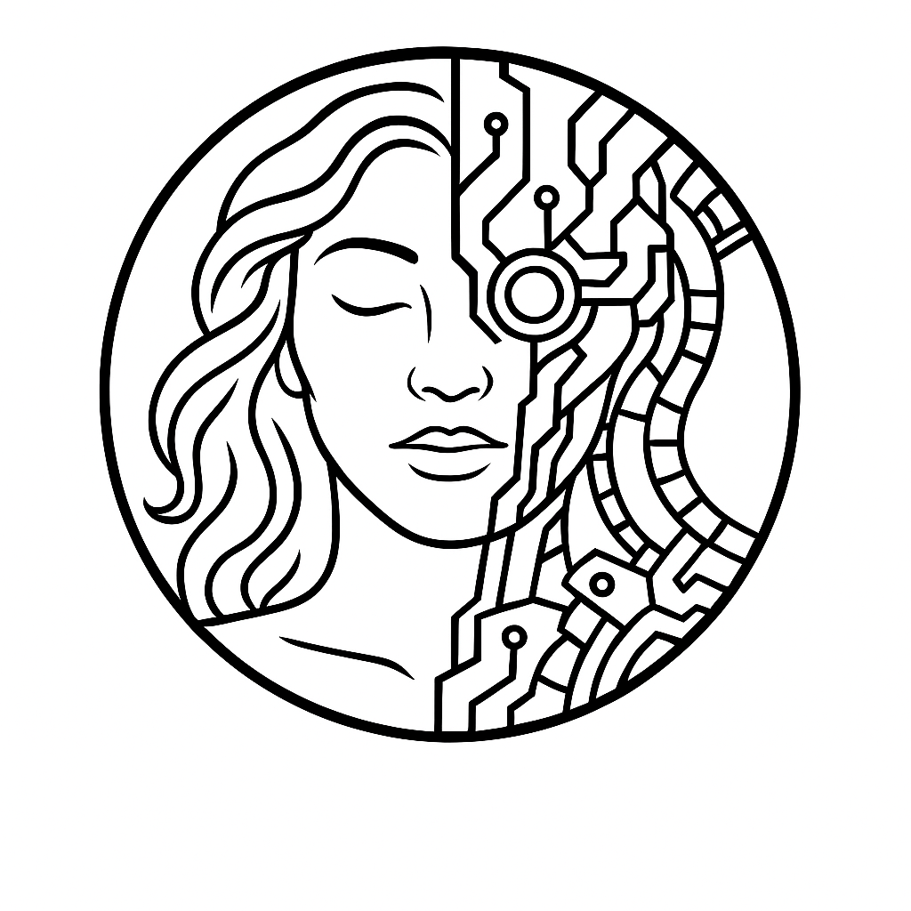

UFTM / Uberaba, MG
Construindo hoje.
Transformando o amanhã.
Somos a GAIA Robótica. Conheça nossos projetos, aprenda com a equipe e faça parte da próxima ideia.
Conheça a GAIAProjetos, conquistas e quem faz acontecerAprenda robótica com a genteArduino, IA, drones e projetos na práticaMonte um robô seguidor de linhaDa bancada aos primeiros testesSeja parceiro da equipeApoie a próxima geração de projetosFale com a GAIADúvidas, convites e ações na sua escola
@gaia.robotica no Instagram ↗